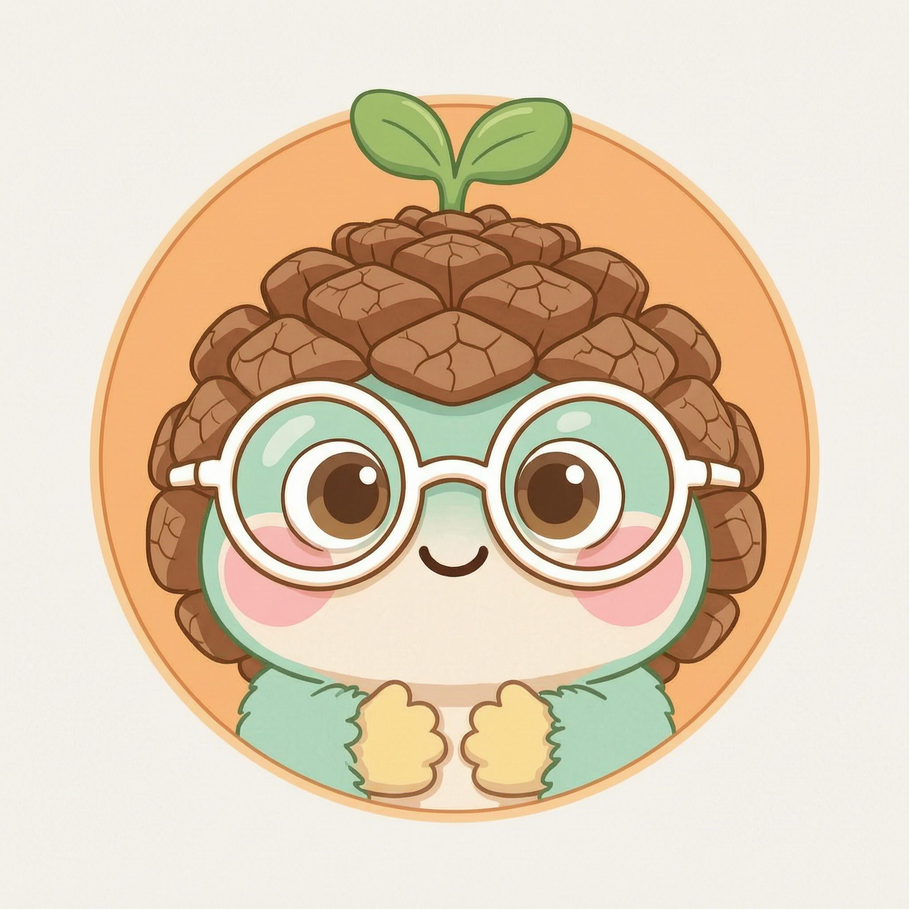

栏目：年中锚点·2026上半年特辑 ｜ 公众号：松果投资实验室 ｜ 作者：松果
数据口径：行业涨跌幅为申万一级行业2026上半年行情（2026-06-30截止），宏观为2026年6月官方值，全部来自文末数据底座，无估算。
本文不预测风格轮动，只把货架、生意、价格与时间放在同一张秋日暖光下的桌面上。

超市货架上的发现六月最后一个周末，我们照例去了一趟家附近的超市。酱油还是那个酱油，酸奶还是那个酸奶，价签和三年前比挪不了几个字；家电卖场的冰洗区照常在做以旧换新；药店门口照常有人拎着袋子进进出出。
然后我们打开市场半年报，看到一个古怪的对照：电子涨了79.66%，通信涨了71.30%；而食品饮料跌了21.18%，医药生物跌了13.59%，家用电器跌了10.32%。日子最离不开的生意，上半年跌得最狠。货架没变，报价先跌为敬。
问题自然就来了：到底是生意变了，还是只有价格变了？
先把行情放一边，看看这三类生意到底是干什么的。
吃完就得再买，不需要说服人类重新吃饭。一瓶调味品客单价很小，但乘以十几亿人的一日三餐，现金流就变得极其平滑。它不性感，可它每天开门就有进项。
一台机器用十年，但每个家庭都要走一遍换新周期，叠起来就是大底盘。而且这个行业打了二十多年价格战，活下来的把制造规模和渠道网络都焊死了，新玩家很难再挤进牌桌。
经济周期不影响人生病。它的门槛在另一头——一款药从研发、临床、审批到上市要按年计时，先上市吃专利期，上不来的一直上不来。时间本身就是墙。
这三类生意的共同点，是赚钱方式简单且难以被改变：钱进来、货出去。龙头普遍先收经销商的款、后付供应商的账，做得越大，沉淀在自己账上的现金越多。这类生意不追风口，只按天计数。
护城河常见有四类：无形资产、成本优势、转换成本、网络效应。这三个行业的河，最典型的是前两类。
消费者拿起那瓶东西时不看价签——那个不看价签的动作，就是品牌的全部价值。心智位置不是三五年能砸钱买到的，它靠几十年日复一日把合格的货稳定放上餐桌。
底下是制造规模带来的成本线，同样一条产线，效率差一档就是生死差；前面是渠道与服务网，从城市卖场一直铺到县城乡镇。单点降价砸不穿一套体系。
头部企业“研发一代、储备一代、上市一代”的管线，是十几年真金白银和人头堆出来的，抄不走，也快不起来。
护城河不能光靠嘴说，最朴素的验证是净资产收益率（ROE）：一块钱股东投入，一年能赚回几毛钱。真正有河的生意，ROE靠的不是某一年运气，而是十年趋势。
这三类行业龙头的特征是“高而稳”：过去十年，它们的ROE普遍长期站在市场平均之上，波动不大。这个判断请以各公司年报为准，具体数值需核验，我们不在这里编数字，但方向敢讲：在全部申万一级行业里，食品饮料与家电的龙头，历来是“持续高ROE”最经典的样本。
图表位：三行业龙头近十年ROE柱状图，数据取自上市公司年报，发布前逐家核验。
为什么一张ROE柱状图比K线图重要？因为股价可以半年跌掉两成，而一门生意的ROE柱子如果十年没被砍短，就说明市场的悲观和生意的现实脱了节。上半年那-21.18%、-13.59%、-10.32%，砍的是股价这张图；ROE那张图砍没砍，要等每一份年报来回答。
讲到这里，必须补一句关键的冷水：跌，本身从来不是买入理由。
先看全局。上半年不是熊市：沪深300涨5.55%，收在4979.43点，PE-TTM 14.51倍、PB 1.47倍；创业板涨31.81%，PE高达54.63倍、PB 7.32倍。指数温和，行业极值差却超过100个百分点——钱没有离场，全市场6月末日成交约1.5到1.7万亿元，只是挤去了同一头。
| 指数 | 上半年表现 | 估值观察 |
|---|---|---|
| 沪深300 | +5.55%，收在4979.43点 | PE-TTM 14.51倍，PB 1.47倍 |
| 创业板 | +31.81% | PE 54.63倍，PB 7.32倍 |
再看宏观。6月PMI 50.3，重新站上荣枯线，上半年49.3→49.0→50.4→50.3→50.0→50.3，温和爬坡；CPI同比+1.0%，偏凉但没冰；M1同比4.0%、M2同比8.0%，Shibor一周期1.458%，资金面宽松。需求没塌，钱也不紧——那么消费类资产跌两成，就更像情绪和风格的错位，而不是基本面的坍塌。
| 宏观指标 | 最新读数 | 含义 |
|---|---|---|
| PMI | 50.3 | 重新站上荣枯线，温和爬坡 |
| CPI同比 | +1.0% | 偏凉，但没冰 |
| M1 / M2同比 | 4.0% / 8.0% | 资金面宽松 |
| Shibor 1W | 1.458% | 流动性并不紧张 |
这正是“错杀”的经典形状：资金充裕的时候，最不性感的现金奶牛最被冷落，因为它们节奏太稳，配不上风口的戏剧性。下跌对我们只有一个含义：好生意的价格垫子变厚了一点。
但垫子只对还站得住的生意有意义——要分清哪些是被错杀的货架，哪些是真的过期了。商贸零售跌29.30%、美容护理跌25.99%、农林牧渔跌25.26%，同样跌两成以上，里面哪家是错杀、哪家是出清，就是另一篇文章的事了。我们只负责提出问题，不替任何人按确认键。
价格垫子变厚，不等于买入指令。真正要确认的是：这门生意还在不在原来的轨道上。
最后说说时间。
今天能坐到树荫下，是因为很久以前种下了一棵树——这个逻辑，对生意成立，对投资同样成立。上半年，市场的钱投票给了“还没兑现的故事”，而那些做了几十年货的生意，被留在了-21.18%的阴凉里。
对这类生意，时间是朋友：人总要吃饭、换家电、看病；心智货架越老越深；现金流一年一年滚存复利。对一个故事，时间则是另一种裁判。
站在这个年中锚点上，我们不预测下半年风格会不会轮动，只留下三个问题：
只要生意还在长，价格早晚会来对齐——或者，我们站在原地等，让复利自己找过来。
数据出处：国家统计局（PMI、CPI）、中国人民银行（M1/M2）、全国银行间同业拆借中心（Shibor）、中证指数有限公司（指数行情、PE/PB）、申万行业指数（行业半年涨跌幅，经tushare数据接口获取）。
行情截至2026-06-30，宏观为2026年6月官方值，均为真实数据可查证。文中ROE为定性描述，公司级数值须以年报核验为准。
本文为行业与生意逻辑研究，不构成任何投资建议，不荐股。